Actual app / native-05-place-runtime-v3 Acquired journeys and explicit mature diagnostics are separately reported. Visual, child observation, natural 7-day growth and real-device gates are not inferred.
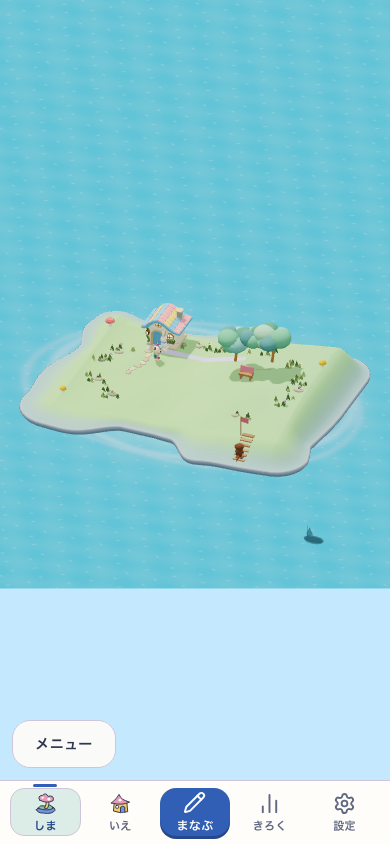
qa-place-p01-lane-v1-390-grown-real-3d.png 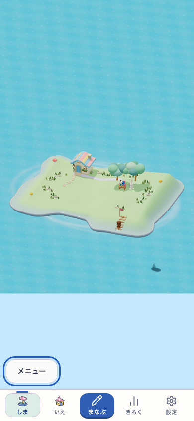
qa-place-p01-lane-v1-390-physical-use.png 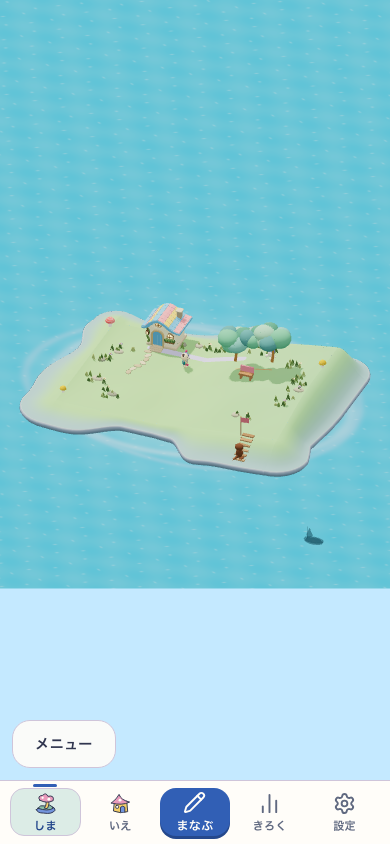
qa-place-p01-lane-v1-390-stored-rejoined-history.png 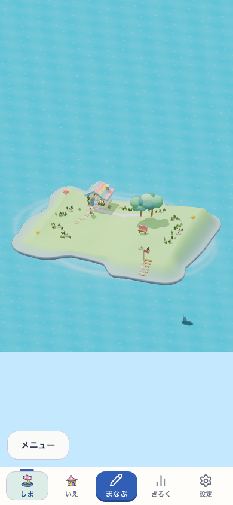
qa-place-p01-corner-v1-390-grown-real-3d.png 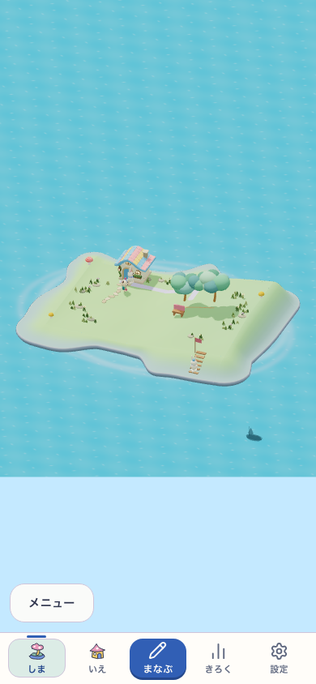
qa-place-p01-alcove-v1-390-grown-real-3d.png qa-place-p02-lane-v1-390-grown-real-3d.png 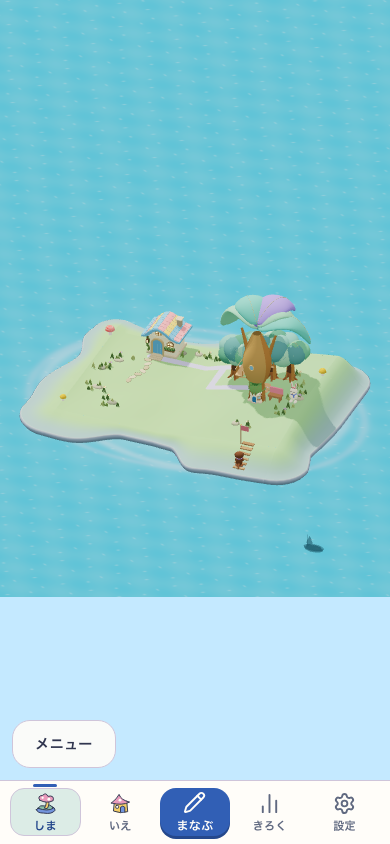
qa-place-p02-lane-v1-390-physical-use.png 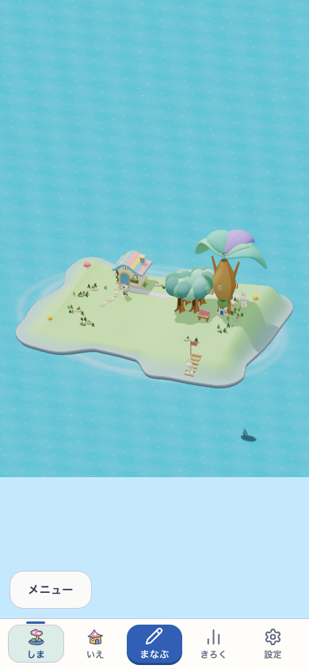
qa-place-p02-cluster-v1-390-grown-real-3d.png 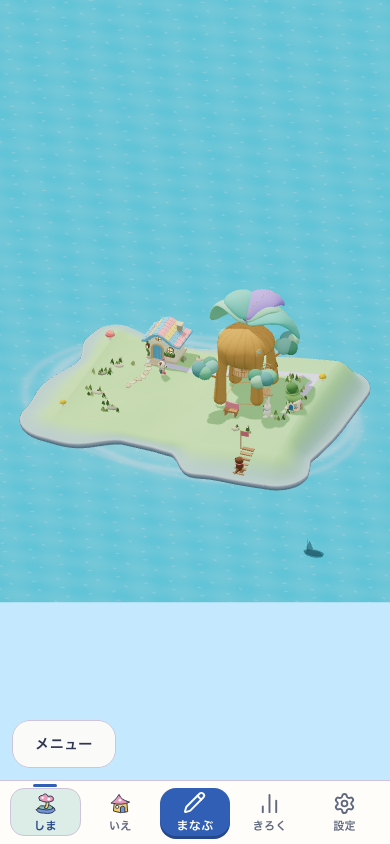
qa-place-p02-court-v1-390-grown-real-3d.png 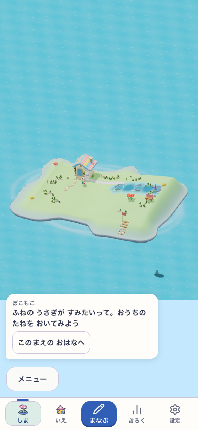
qa-place-p03-tiered-v1-390-grown-real-3d.png 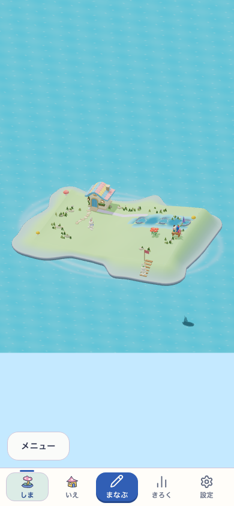
qa-place-p03-tiered-v1-390-physical-use.png 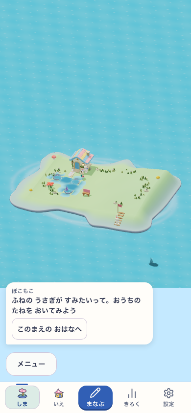
qa-place-p03-curve-v1-390-grown-real-3d.png 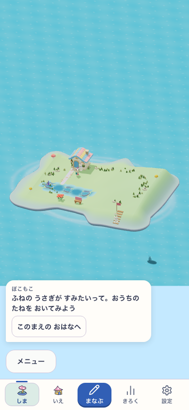
qa-place-p03-shore-v1-390-grown-real-3d.png qa-place-p04-bay-v1-390-grown-real-3d.png 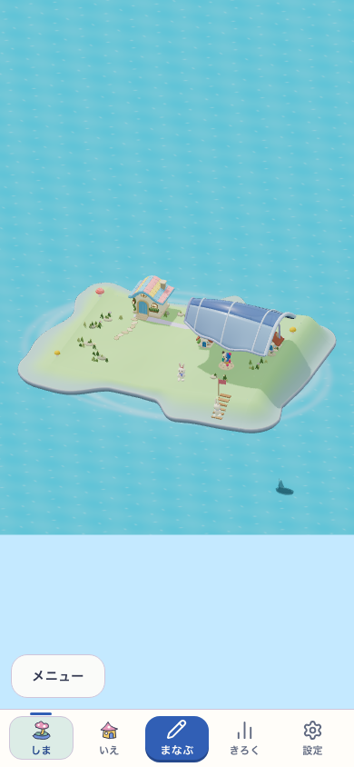
qa-place-p04-bay-v1-390-physical-use.png 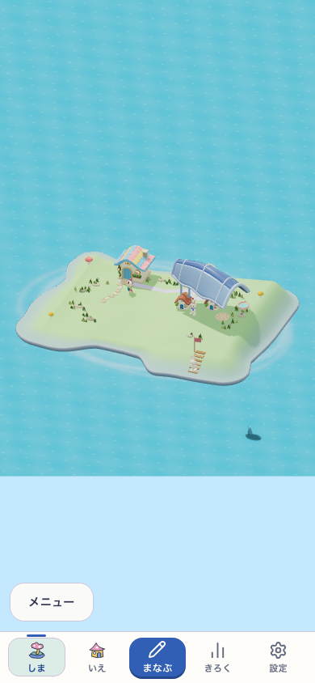
qa-place-p04-lane-v1-390-grown-real-3d.png qa-place-p04-lane-v1-390-physical-use.png 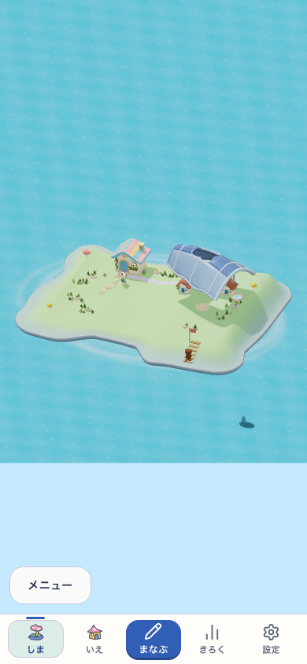
qa-place-p04-court-v1-390-grown-real-3d.png qa-place-p05-arch-v1-390-grown-real-3d.png 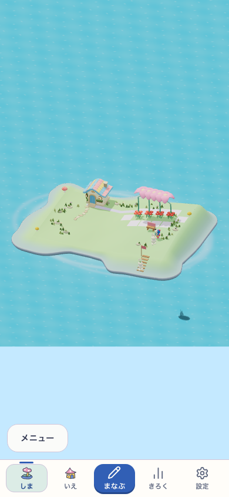
qa-place-p05-arch-v1-390-first-failure.png